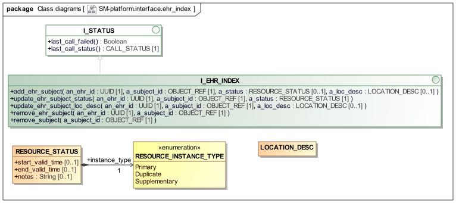

EHR Index Service
Overview
The platform.interface.ehr_index package shown below defines service interface to the EHR_INDEX component in the logical platform architecture.

sm.platform.interface.ehr_index packageThe primary function of the EHR Index service is to enable the recording of associations of subject identifiers (i.e. patient or other subject or care identifiers) with EHR identifiers. In a privacy-supporting environment, this enables EHRs to be persisted with only an EHR id; the EHR Index has to be used to obtain the subject identifier, which will usually be used as a key into a demographic or MPI service, ultimately allowing EHR data to be associated with the correct patient demographic information in a user application.
There is no limit on the number of subject identifiers associated with a given EHR id, and vice versa, since in real environments both situations commonly occur. The two cases are as follows:
-
multiple subject identifiers for one EHR id: indicates that more than one subject of care has data in the same EHR. This is a dangerous error condition, and needs to be detected and rectified.
-
multiple EHR ids for a given subject identifier: indicates that multiple EHRs have been created for the same subject, typically as a result of name entry errors, and / or of multiple departments independently creating EHRs rather than locating existing ones for the patient. This is also an error situation, although less dangerous than the inverse situation.
To enable management of these problems, other meta-data can be associated with each EHR id / subject id association, represented by the RESOURCE_STATUS type.
A further useful facility that can be provided by this service is to maintain dynamic location information for EHRs. This is enabled by the inclusion of optional LOCATION_DESC instances with index records.
Class Definitions
Unresolved include directive in modules/openehr_platform/pages/ehr_index_service.adoc - include::ROOT:partial$classes/i_ehr_index.adoc[]
Unresolved include directive in modules/openehr_platform/pages/ehr_index_service.adoc - include::ROOT:partial$classes/resource_status.adoc[]
Unresolved include directive in modules/openehr_platform/pages/ehr_index_service.adoc - include::ROOT:partial$classes/resource_instance_type.adoc[]
Unresolved include directive in modules/openehr_platform/pages/ehr_index_service.adoc - include::ROOT:partial$classes/location_desc.adoc[]